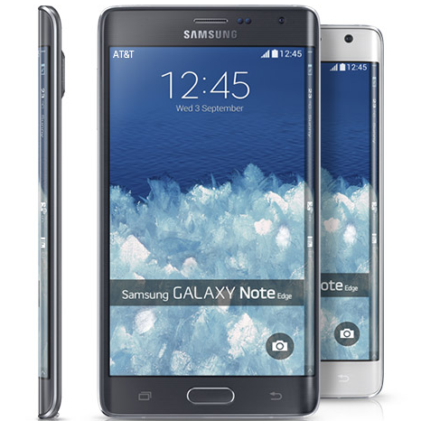

Introduction
Experiments are great but it takes manufacturing prowess to follow them all the way to the retail shelves. Samsung have it - no surprise there - and they pulled it off, bringing the Galaxy Note Edge to stores. Never mind that curved screen looks like a concept. The Galaxy Note 4, which was used as a base, will otherwise continue to offer the flagship experience, sans the experimental features.
The Galaxy Note Edge features a 5.6" QHD+ screen - a little smaller than the Galaxy Note 4 screen up front, but with 160px worth of an added strip on the right side of the device. This "Edge screen" is subtly curved outwards but connected with the main screen - in fact, they are one piece in terms of hardware, though the software handles them separately for added functionality.
We'll discuss the software additions in detail, as for the basics you're basically looking at a Galaxy Note 4 with a Snapdragon 805 chipset - this includes everything from the S Pen stylus to the heart rate and SpO2 sensors.
Key features
5.6" 16M-color QHD+ Super AMOLED capacitive touchscreen with curved Gorilla Glass 3 Curved Edge display for extra content, features Android OS v4.4 KitKat with TouchWiz UI Quad-core 2.7GHz Krait 450 CPU, Adreno 420 GPU; Qualcomm Snapdragon 805 chipset 3GB of RAM 16MP OIS camera with 2160p video recording @ 30fps, 1080p @ 60fps, 720p @ 120fps 3.7MP front-facing camera, 1440p video recording 32/64GB of built-in storage; microSD card slot S Pen stylus Enhanced Multi-window multitasking support Fingerprint scanner with PayPal support and private mode access LTE Cat. 6 (300Mbps), Wi-Fi a/b/g/n/ac, GPS/GLONASS/Beidu receiver, Bluetooth v4.1+LE, ANT+, NFC NFC IR port for remote control functionality Standard 3.5mm audio jack Accelerometer and proximity sensor Heart-rate monitor, SpO2 sensor Active noise cancellation with a dedicated mic 3,000mAh battery
Main disadvantages
Edge display better suited for right-handed users Rear-mounted mono speaker The uneven gap between the metal frame and curved screen glass takes a few points away from an otherwise excellent build No enhanced resistance to liquids or dust Wireless charging support only enabled by an optional back cover Samsung's previous device with a bent screen, the Galaxy Round, was a high-end phablet in its own right but the added value of the arched screen was questionable. The Galaxy Note Edge seems to have more purpose and steps on the recognizable giant shoulders of the Galaxy Note 4, instead of building user awareness from scratch. The Edge screen is used by the TouchWiz software to display at-a-glance info and offer various shortcuts. You can flip between multiple panels with a swipe and they offer a new multitasking experience on Android. The Edge screen boosts the user experience in compatible apps too: being on the side it can act as side-mounted buttons, like a shutter key for the camera or playback controls for the video player. This leaves the main screen fully dedicated to displaying content.